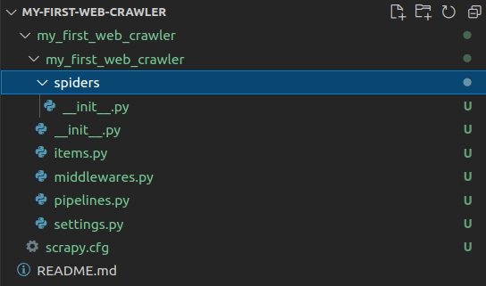
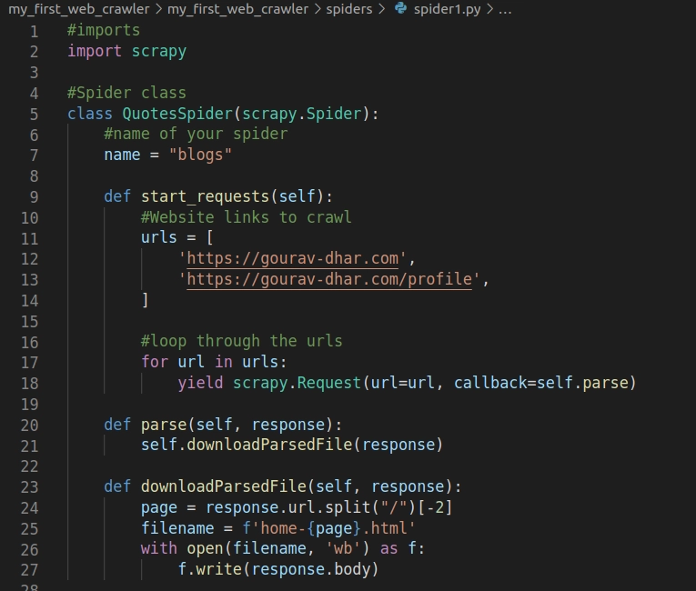
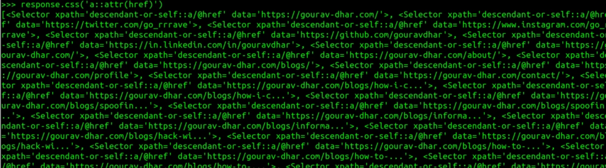
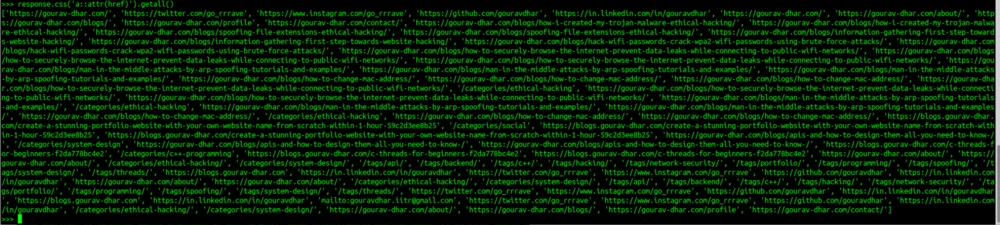
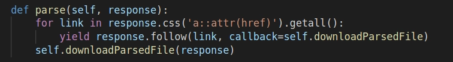

A web crawler is a bot that crawls the internet to index and downloads the contents of websites for scraping. Web crawlers are also called web spiders or crawling bots. A web crawler needs to be provided with a list of initial websites to start from which it will index and crawl the links present in the indexed websites to discover new pages.
To give an analogy, let’s consider all the websites on the internet as books present in a library. A web crawler is a librarian whose job is to enter the book’s information in a catalog so that it is easy to find the books when required. To organize the books, the librarian will store the title, description, and category of the books in a catalog. A web crawler will also do the same thing. The goal of a web crawler is accomplished when it indexes all the pages on the internet. Something which is impossible to achieve!

In this blog, I will be coding in python. There are a couple of web crawling and web scraping frameworks present in python. I will be using scrapy.
Installing scrapy:
$ pip install scrapy
To create a scrapy project run the following command. Here the name of my application is my_first_web_crawler
$ scrapy startproject my_first_web_crawler
This will generate a scrapy boilerplate code and folder structure that should look like this: 
The folder named spiders contains the files which scrapy uses to crawl the websites. I will create a file named spider1.py in this directory and write the following lines of code:

You can find the above code here: Link to the above code
I have provided the URLs of my web pages which I will be crawling. These pages contain links to my blogs. You can provide any number of URLs since this is a list. My URLs which I will be crawling :
https://gourav-dhar.com
https://gourav-dhar.com/profile
The above code crawls through the web pages provided in the links and downloads the pages.
To execute the code, run the following command :
scrapy crawl <your-spider-name>
My spider name is blogs (Defined in line 7 of the above code)
And tada!!! The data of the links have been downloaded in the project folder.
But that’s not enough, I want to actually download the data of the links this page points to. For this, I have to scrape all the links present on the main page and crawl through it. I will be using scrapy shell to write code to scrape the website information.
Note: Scrapy Shell is an interactive shell where you can try and debug scraping code very quickly
To start scrapy shell, just write :
$ scrapy shell 'https://gourav-dhar.com'
i.e. scrapy shell followed by the url
Once the shell is opened, type response to confirm that you get a 200 response.
The referring links are generally located in the a href class in the html. I need to scrape all the values present in this link, so I will write this to see the output
>>> response.css('a::attr(href)')

This is a list of a href classes on the page. To get a cleaned out result of only the links, we have to use the getall() function
>>> response.css('a::attr(href)').getall()
The result should look like this : 
This will return me a list of all the values of href.
To download all the files in this list, I will modify my parse function in the spider code to get all the links using the above command. The modified parse function looks something like this:

The Github Link for the project can be found here : GitHub Link
Now again run the following command in the terminal:
$ scrapy crawl blogs
And I was able to download the content of all the links my homepage points to. This function can be extended to an infinite loop where you can crawl through all the websites on the internet.
The web crawler is a powerful tool to store and index the contents of a web page. Its applications are enormous.
Note : You can also add filters as to who can crawl your site by mentioning the blacklisted/whitelisted domains in the
robots.txtfile of your site.
The search engines use web crawling to index and store the meta titles and descriptions in their database to quickly show the results of the queries the user enters. Examples of major search engines are
Google,
Bing,
Yahoo,
Duck Duck Go. The search engines also add their own recommendation system on top of these results which makes each search engine’s algorithms different.
Web crawling is also used for copyright/plagiarism violation detection. Web Analytics and Data Mining are also the major applications. It can also be used to detect web malware detection like phishing attacks. Suppose you own facebook.com, you can crawl the internet to check if anyone else is using a website that looks similar to facebook.com which can be used for phishing attacks.
The Github Link for the project can be found here : GitHub Link

I am Gourav Dhar, a 2019 graduate from IIT Roorkee where I pursued my bachelors in Electronics and Communication Engineering.
Know More